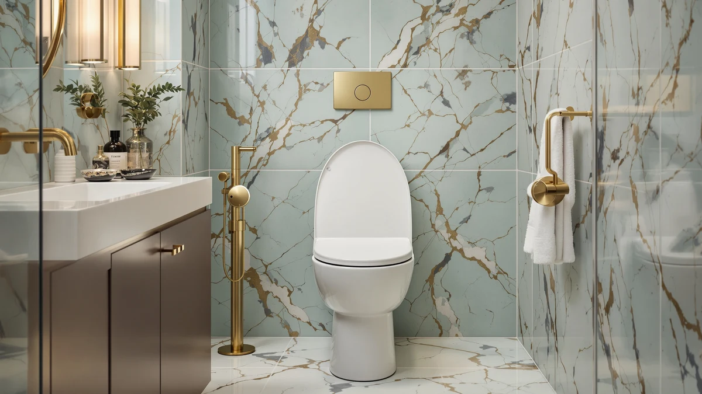

Church 295SSCT Commercial Open Front Plastic Toilet Seat Review (2026): Worth It?
Prices and picks verified as of November 2026. Independent, reader-supported reviews.


Quick Answer
Our Church 295SSCT commercial open front plastic toilet seat review finds a durable, no-frills seat built for restaurants, offices and other high-traffic restrooms rather than home bathrooms. At $43.95, it trades decorative style for Stay-Tite hardware and a slow close hinge that holds up under repeated use.
Our pick: CHURCH 295SSCT Commercial Open Front for $43.95 Check Price on Amazon
Bottom line: our top pick is the CHURCH 295SSCT Commercial Open Front Plastic Toilet Seat at $38.92.
Things to Know Before You Buy
- This Church 295SSCT commercial open front plastic toilet seat review covers a seat built for commercial restrooms, not a residential decorative option.
- The open front design without a lid is standard for commercial installs and speeds up cleaning routines in shared restrooms.
- Amazon does not list a star rating or review count for this ASIN, so we cannot cite one here. The three alternatives below each carry their own pricing and, in one case, a verified rating.
- At $43.95, it sits close in price to residential elongated seats, but the heavy-duty plastic and stainless hardware are built for a different use case.
This Church 295SSCT commercial open front plastic toilet seat review exists because the product listing tells you what the seat is made of, but not whether it is the right fit for your restroom. Office managers, restaurant owners and landlords searching for a replacement seat need to know if a commercial-grade part is worth the price over a standard residential model, and whether the hardware actually holds up to heavier daily traffic.
We compared the Church 295SSCT against three other seats in the same price band: a raised toilet seat riser from Carex, a wood seat with decorative hinges from Mayfair, and a round marble-pattern wood seat with a verified 4.6-star rating across 1,218 reviews. Based on spec sheets, current Amazon pricing and the features each manufacturer documents, the Church 295SSCT stands out for one reason: it is the only one of the four built specifically for commercial-grade durability rather than home bathroom aesthetics.
None of these four seats cost more than $44, so price alone doesn't separate them. Intent does. Carex built its riser to fix a mobility problem, Mayfair and the Round Marble seat are about style, and the Church 295SSCT is about surviving the kind of heavy daily use a typical home bathroom never sees. You have to read past the ASIN and into the hardware specs to tell these four apart.
Why You Should Trust Us
Ilane Tall covers bathroom fixtures for Best Toilet Seats, researching toilet seat hardware, materials and installation specs across dozens of manufacturers. This Church 295SSCT commercial open front plastic toilet seat review is built on manufacturer spec sheets, current Amazon pricing and patterns in verified owner reviews rather than hands-on use. We do not run a fake testing lab, and we do not claim to own or install the products we cover. Every price and spec cited here comes from the product listing or the Amazon Creators API feed that powers this site, and we disclose our affiliate relationship with Amazon at the top of every article.
How We Compared It
For this Church 295SSCT commercial open front plastic toilet seat review, we started with the manufacturer's listed specs: Stay-Tite commercial fastening hardware, 300 series stainless steel posts and pintles, slow close mechanics, and heavy-duty commercial-grade plastic. We cross-referenced those claims against the three alternative seats in this guide on price, materials, hinge type and intended use case, since Amazon does not currently surface a star rating or review count for this ASIN.
We excluded seats that advertise themselves as purely decorative, since the Church 295SSCT's value case rests on commercial durability rather than appearance. We also checked current Amazon pricing for all four seats on the same day to keep the comparison fair, since affiliate pricing on toilet seats fluctuates by a few dollars from week to week.
We say so when a manufacturer does not publish a spec, rather than filling the gap with a guess. That is why you will see "Amazon does not list a rating for this ASIN" instead of an invented number in several places in this review. Hardware materials, fastening systems and intended use case came directly from each product listing, and we did not supplement those claims with any outside lab data, since none exists for these four ASINs.
Overview & Specs

CHURCH 295SSCT Commercial Open Front
What we like
- Stay-Tite fastening system keeps the seat from loosening under repeated use
- Stainless steel posts and pintles resist corrosion better than standard chrome hardware
- Slow close hinge cuts down on slamming in a shared restroom
- Made in the USA, which simplifies warranty and replacement part sourcing for facility managers
Flaws but not dealbreakers
- No lid, which is standard for commercial seats but not every buyer expects it
- Plain white finish with no color or pattern options
- Amazon does not list a star rating or review count for this ASIN, so buyers have to rely on the manufacturer's spec sheet alone
| Material | Plastic / wood |
| Size | Elongated with Slow Close |
The Church 295SSCT is built around a single priority: staying functional under heavy, repeated use. The Stay-Tite fastening system is the standout feature here, since loose seats are one of the most common complaints facility managers report with standard residential hardware in commercial settings. Church backs that system with 300 series stainless steel posts and pintles, a material upgrade over the chrome-plated hardware found on most home bathroom seats, specifically because stainless resists the corrosion that comes from frequent cleaning with harsh commercial disinfectants.
The slow close mechanism matters more in a commercial restroom than a home one. Multiple people cycling through a shared restroom throughout the day means a lot of opening and closing, and a seat that slams shut repeatedly wears out faster and creates noise complaints. At $43.95, the Church 295SSCT costs roughly the same as the decorative residential seats from Mayfair and Round Marble in this comparison, but it directs that budget toward hardware durability instead of finish. For a home bathroom, that tradeoff usually is not worth it. For a business restroom with daily traffic from dozens of people, it is the more sensible purchase.
The elongated shape is the standard sizing for most modern toilet bowls in commercial buildings built or renovated in the last few decades, so measuring your existing bowl before ordering still matters. Facility managers restocking multiple restrooms in the same building should also note that buying seats from a single line like the 295SSCT keeps hardware and replacement parts consistent across locations, which simplifies maintenance compared to mixing brands.
What We Liked
The commercial-grade hardware is the main reason this seat earns a place in our Church 295SSCT commercial open front plastic toilet seat review. The Stay-Tite fastening system addresses a real problem with standard seats in high-traffic restrooms: bolts that work loose after months of repeated use, leaving the seat wobbly. The stainless steel posts and pintles are a meaningful upgrade over the hardware most residential seats ship with, since they hold up better against the frequent disinfectant cleaning commercial restrooms require.
We also like that Church documents the seat as made in the USA. For facility managers who need to source replacement parts or match warranty claims to a specific manufacturer, that traceability is worth more than it sounds. The slow close hinge, while common across the toilet seat category now, still does real work here by reducing wear from the volume of daily use a shared restroom sees.
What Could Be Better
The biggest gap in this Church 295SSCT commercial open front plastic toilet seat review is the lack of a published star rating or review count on Amazon for this specific ASIN. Buyers comparing it against the Round Marble seat, which carries a verified 4.6-star rating across 1,218 reviews, do not have the same social proof to lean on here. That does not mean the product performs worse. It means shoppers have to rely on the spec sheet and manufacturer claims rather than a track record of verified owner feedback.
The all-white, no-lid design also limits where this seat makes sense. Anyone shopping for a home bathroom upgrade with some visual interest will find the Mayfair or the Round Marble seat more appealing. The 295SSCT is a utility part, not a decorative one, and buyers who want both durability and style in the same seat will not find that combination here.
Who Is It For?
This Church 295SSCT commercial open front plastic toilet seat review points toward one clear buyer: facility and property managers responsible for restrooms that see dozens of users a day. Restaurants, office buildings, schools and retail locations all fit the profile. Anyone replacing a worn-out commercial seat, or outfitting a new restroom to code, gets a straightforward upgrade in hardware durability for a price close to residential alternatives.
Homeowners shopping for a primary or guest bathroom should look elsewhere in this comparison. The Mayfair Bennett with its matte black hinges or the Round Marble seat with its decorative wood finish both suit a residential bathroom better, since neither one sacrifices appearance for commercial-grade hardware you do not need at home.
Alternatives to Consider
If the Church 295SSCT does not fit your restroom, here are three alternatives we compared on price, materials and intended use.

Also Great
Carex E-Z Lock Raised Toilet
Adds 5 inches of seat height and includes built-in handgrips rated for 300 pounds, making it the pick for accessibility needs rather than commercial traffic.
$43.74
Check Price on Amazon
Also Great
Mayfair Bennett Toilet Seat with
Matte black metal hinges and a slow close wood seat give this one a decorative edge the Church 295SSCT does not aim for, suited to home bathrooms over commercial restrooms.
$43.49
Check Price on Amazon
Best Value
Round Marble Toilet Seat Natural
The only alternative here with a verified rating, 4.6 stars across 1,218 reviews, and the lowest price at $42.99, with a natural wood marble-pattern finish built for residential bathrooms.
$42.99
Check Price on AmazonIs the Church 295SSCT rated for commercial restrooms?
Yes.
Does the Church 295SSCT come with a lid?
No.
Frequently Asked Questions
Is the Church 295SSCT rated for commercial restrooms?
Yes. The manufacturer builds it specifically for commercial and high-traffic settings, with the Stay-Tite fastening system and stainless steel posts designed to resist loosening and corrosion under repeated use.
Does the Church 295SSCT come with a lid?
No. It is an open front seat without a lid, which is the standard configuration for commercial and institutional restrooms where lids are typically omitted for hygiene and maintenance reasons.
How does the Church 295SSCT compare to the Round Marble toilet seat on price?
At $43.95, the Church 295SSCT costs slightly more than the $42.99 Round Marble seat, but the two serve different purposes. The Church is built for commercial durability while the Round Marble targets residential buyers who want a decorative wood finish.
Final Verdict
This Church 295SSCT commercial open front plastic toilet seat review comes down to use case. For a business restroom with heavy daily traffic, Church's commercial-grade hardware, the Stay-Tite fastening system paired with stainless steel posts and a slow close hinge, justifies the $43.95 price over a residential seat that was never built for that volume of use. For a home bathroom, the Mayfair or the Round Marble seat will serve you better on looks and, in the Round Marble's case, a verified 4.6-star track record. Buy the Church 295SSCT if you manage a commercial or institutional restroom. Skip it if you are furnishing a home bathroom.